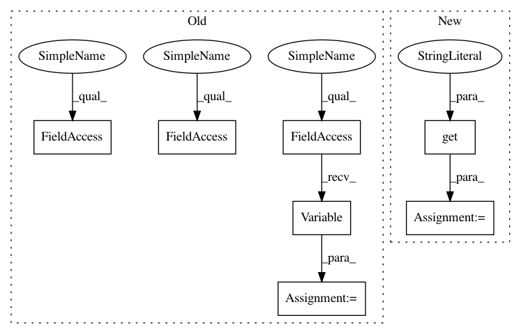

57c14e7f131a851c7e94afd19dbc6f15ea1a0317,src/symbols/fmobilefacenet.py,,get_symbol,#Any#,45
Before Change
conv_6_sep = Conv(conv_5, num_filter=512, kernel=(1, 1), pad=(0, 0), stride=(1, 1), name="conv_6sep")
conv_6_dw = Linear(conv_6_sep, num_filter=512, num_group=512, kernel=(7,7), pad=(0, 0), stride=(1, 1), name="conv_6dw7_7")
//conv_6_dw = mx.symbol.Dropout(data=conv_6_dw, p=0.4)
_weight = mx.symbol.Variable("fc1_weight", shape=(num_classes, 512), lr_mult=1.0, wd_mult=wd_mult)
conv_6_f = mx.sym.FullyConnected(data=conv_6_dw, weight=_weight, num_hidden=num_classes, name="pre_fc1")
fc1 = mx.sym.BatchNorm(data=conv_6_f, fix_gamma=True, eps=2e-5, momentum=bn_mom, name="fc1")
return fc1
After Change
global bn_mom
bn_mom = kwargs.get("bn_mom", 0.9)
wd_mult = kwargs.get("wd_mult", 1.)
version_output = kwargs.get("version_output", "GNAP")
assert version_output=="GDC" or version_output=="GNAP"
fc_type = version_output
data = mx.symbol.Variable(name="data")
data = data-127.5
data = data*0.0078125
conv_1 = Conv(data, num_filter=64, kernel=(3, 3), pad=(1, 1), stride=(2, 2), name="conv_1")
In pattern: SUPERPATTERN
Frequency: 3
Non-data size: 7
Instances
Project Name: deepinsight/insightface
Commit Name: 57c14e7f131a851c7e94afd19dbc6f15ea1a0317
Time: 2018-08-03
Author: guojia@gmail.com
File Name: src/symbols/fmobilefacenet.py
Class Name:
Method Name: get_symbol
Project Name: dpressel/mead-baseline
Commit Name: c2684e5cf3719d15ca5a13c1919642f96b55f177
Time: 2018-06-10
Author: dpressel@gmail.com
File Name: python/baseline/pytorch/classify/model.py
Class Name: WordClassifierBase
Method Name: make_input
Project Name: deepinsight/insightface
Commit Name: dbf0fd7334d5866a8f575f3e024948d859db858f
Time: 2018-08-03
Author: guojia@gmail.com
File Name: src/symbols/fmobilefacenet.py
Class Name:
Method Name: get_symbol
Project Name: deepinsight/insightface
Commit Name: 57c14e7f131a851c7e94afd19dbc6f15ea1a0317
Time: 2018-08-03
Author: guojia@gmail.com
File Name: src/symbols/fmobilefacenet.py
Class Name:
Method Name: get_symbol